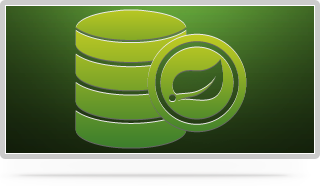

Introduction à SpringData / Neo4j
Qui sommes-nous ?
-
Olivier Girardot
-
Florent Biville
Finaliste malheureux de CodeStory ;(
Plan
-
La mouvance NOSQL
-
Utilisation de Neo4J
-
Présentation de SpringData
-
DevInLove
-
Utilisation sur l'existant
-
Déploiement
NOSQL ? ça sonne un peu comme ça...

NOSQL
NOSQL = Not Only SQL
- Le terme date de 1998 et est popularisé en 2009
- Il regroupe des bases de données très différentes
- Éloigné du modèle relationnel des SGBDR (Oracle, PostgreSQL etc.)
- Souvent associé à des modèles scalables, mais pas que.
Basé sur un bilan simple
- ACID et SQL coûtent cher
- Le seul vrai moyen efficace de rendre échelonnable une BDD relationnelle, c'est le sharding !
- Le SHARDING c'est dur ! et ça dépend beaucoup du métier...
- Le théorème CAP de Brewer est inévitable
On peut faire mieux !
Les différents types
-
Key-Value Store :
- Redis
- BerkeleyDB
- (et dans un sens Cassandra/RIAK)
- Document Oriented :
- Column oriented :
- les versatiles :
- Tokyo Cabinet
- et Kyoto Cabinet
Bien sûr il n'y a ici que les principaux acteurs du genre.
Et enfin ...
Les bases de données Graphes :
- AllegroGraph
- Bigdata
- CloudGraph
- Cytoscape
- DEX
- Filament
- GraphBase
- Graphd
- Horton
- HyperGraphDB
- InfiniteGraph
- InfoGrid
- Neo4j
- OrientDB
- OQGRAPH
- sones GraphDB
- VertexDB
- Virtuoso Universal Server
- R2DF
- GiraffeDB
Et par rapport au théorème CAP ?

Peut-être que l'avenir c'est ça ?
Pourquoi Neo4J ?
Base de données écrite en Java
Supportée commercialement par Neo Technology
Rapprochement récent de SpringSource
Roadmap
Version stable: 1.6
1.7 prévue fin Mars 2012
BDD orientée graphe ?
Données fortement inter-connectées
Les Graphes représentent bien un modèle Objet
Est plus facilement scalable qu'un SGBDR, pas de jointures coûteuses
Modèle rempli d'algorithmes efficaces
et bien connus en Recherche Opérationnelle
Flexible et souvent Schema-Less
Concepts I · 3 choses à retenir
-
Noeud (vertex, node)
La forme la plus simple d'un graphe.
Node iAmANode = graphDatastore.createNode();
-
Relation (relationship, edge)
Permet d'organiser les noeuds.
iAmANode.createRelationshipTo(anotherNode, ExampleRelationships.ROMANTIC);
-
Propriété (property, key/value pairs)
Enrichit les noeuds et les relations.
iAmANode.setProperty("having", "a property!");
Concepts II · traversée de graphe
Quizz: combien de noeuds sont retournés ?
Possibilités d'utiliser des DSL comme Cypher ou Gremlin...
Concepts III · index
Implémentation embarquée par défaut: Lucène.
Les index supportent également le pseudo-requêtage sur les valeurs indexées (ex: index.query("key","*e*")).
Présentation de SpringData

Projet ombrelle visant à faciliter l'intégration de la couche d'accès aux données aux applications se reposant sur Spring framework.
Parmi ses membres, on retrouve :
- SpringData/JPA
- SpringData/MongoDb
- SpringData/Redis
- SpringData/Neo4J
Les fonctionnalités communes entre les tous les projets SpringData/* sont regroupées dans Spring Data Commons.
Aperçu
Concept :
Vous permettre de trouver l'âme soeur programmatiquement en se basant :
- Sur vos mascottes préférées : Tux, Django Poney, elePHPant
- Vos outils favoris : IntelliJIDEA, Eclipse, Git, CVS...
- etc...
Utilisation sur l'existant
Entités partielles
Permet de partager la persistence d'une entité entre Neo4J et un autre store.
Exemple (tiré de “Good Relationships, The Spring Data Neo4j Guide Book”)
Et si on en faisait quelque chose ?
Donc plusieurs questions :
- Est ce qu'il existe des plateformes de déploiements ?
- Fiables ?
- Pas cher ?
- Simples ?
- Voire même carrément sexy :
Plusieurs options existent
See you à Devoxx France ;)
←
→
/
#